6.4 Gazebo 仿真机器人导航
本节把导航流程从 6.3 的 arbotix 假仿真搬回真实 Gazebo 物理世界：机器人在 Gazebo 中受到真实的
物理约束，差速插件根据轮子转动计算里程计、激光插件发布真实的 /scan，move_base 据此进行实时避障。
需要特别说明的是，尽管进入了真实 Gazebo，本节教程配套的定位环节仍然使用 fake_localization（完美定位），
而不是 AMCL，因此 rviz 中无需设置初始位姿，直接下发 2D Nav Goal 即可。
本节包含两个演示：先在教程自带的 cloister 回廊世界跑通真实导航，再把世界换成 6.1 自己创建的 my_room 房间（教程中称 hourse.world），用自己 gmapping 建的地图导航。
本节配套功能包位于仓库：
src/chap6/catkin_ws/src/mrobot_gazebo/ # 新增 cloister.world，Gazebo 启动 launch 支持外部覆盖世界
src/chap6/catkin_ws/src/mrobot_navigation/ # 新增 move_base、fake_nav_cloister/hourse 演示、config/mrobot 与配套地图
1. 本节目标
- 理解真实 Gazebo 导航与 arbotix 假仿真的区别，掌握真实里程计、真实激光与实时避障的数据流；
- 理解为什么本节在真实 Gazebo 中仍使用
fake_localization，并理清完整 TF 坐标树； - 准备 cloister 回廊例程所需的世界、地图、代价地图配置与 launch；
- 排查并修复 roslaunch 命令行无法覆盖
world_name参数的问题； - 排查并修复
fake_nav_hourse_demo.launch文件缺失的问题； - 在 cloister 与自建 my_room 两个世界中完成
2D Nav Goal自主导航； - 记录当前保留的两类 TF 警告，作为后续优化项。
2. 背景知识
2.1 真实 Gazebo 导航与 arbotix 假仿真的区别
6.3 的 arbotix 假仿真不启动 Gazebo，里程计、关节运动都是软件"算"出来的，且没有真实激光。本节则启动 完整的 Gazebo 物理引擎，两者对比如下：
| 对比项 | 6.3 arbotix 假仿真 | 6.4 Gazebo 真仿真 |
|---|---|---|
| 物理引擎 | 不启动 Gazebo | 真实 Gazebo，含重力、碰撞、摩擦 |
里程计 /odom |
arbotix 软件积分 | 差速插件依据轮子真实转动计算 |
激光 /scan |
无 | 激光插件真实射线扫描 |
| 实时避障 | 主要靠静态地图 | 静态地图 + 真实激光障碍，实时避障 |
| 定位 | fake_localization | 仍是 fake_localization |
| 路径规划 | move_base | move_base |
2.2 真实里程计、激光与实时避障
Gazebo 机器人模型（mrobot_gazebo/urdf）中配置了两个关键插件：
- 差速驱动插件
libgazebo_ros_diff_drive.so：订阅/cmd_vel，驱动左右轮转动，根据轮子实际转角 计算并发布/odom里程计，同时广播odom → base_footprint的 TF，并发布/joint_states； - 激光插件
libgazebo_ros_laser.so：在每个仿真周期发射射线，发布laser_link坐标系下的真实/scan数据。
move_base 的代价地图同时叠加静态地图与实时激光：当机器人运动时，激光不断标记/清除周围障碍，
局部规划器据此滚动采样速度，遇到障碍会重新规划、绕开，实现真实的实时避障。
2.3 为什么仍使用 fake_localization
真实机器人通常用 AMCL（自适应蒙特卡洛定位） 解决"我在哪里"的问题，需要在 rviz 中先给出初始位姿
（2D Pose Estimate），再通过粒子滤波逐步收敛。本节为了把重点放在 Gazebo 与 move_base 的联动上，
沿用 fake_localization：
- 它订阅里程计，把
odom位姿直接包装成 AMCL 风格的/amcl_pose与/particlecloud； - 不做概率估计，默认里程计即真实位姿，属于"完美定位"，因此启动后定位即准确，无需初始位姿。
若希望体验真实粒子滤波定位，可自行编写
amcl.launch（或从配套源码ros_exploring中获取），将fake_localization替换为 AMCL 并在 rviz 中设置初始位姿。这部分属于拓展内容，不在本节主线。
2.4 数据流与 TF 坐标树
两个 launch 各管一边：
终端 1 mrobot_laser_nav_gazebo.launch
├─ Gazebo 加载世界（cloister 或 my_room）
├─ 差速插件：订阅 /cmd_vel，发布 /odom、/joint_states 与 TF(odom→base_footprint)
├─ 激光插件：发布 /scan（frame: laser_link）
└─ robot_state_publisher：发布机器人模型 TF
终端 2 fake_nav_cloister_demo / fake_nav_hourse_demo.launch
├─ map_server 加载静态地图
├─ move_base 全局/局部规划、实时避障（config/mrobot）
├─ fake_localization 包装 AMCL 风格定位
├─ static_transform map→odom 恒等变换
└─ rviz 可视化与 2D Nav Goal
完整 TF 树：
map
└── odom static_transform_publisher / fake_localization（map→odom）
└── base_footprint Gazebo 差速插件（真实里程计）
└── base_link robot_state_publisher（依据 URDF）
└── ... 轮、板件、laser_link ...
3. 环境与依赖检查
开始前先确认工作空间环境加载正常，且导航所需的关键包都能被找到：
source /home/wkb/catkin_ws/devel/setup.bash
for p in map_server move_base fake_localization amcl gazebo_ros; do
rospack find $p >/dev/null 2>&1 && echo "OK: $p" || echo "缺失: $p"
done
五个包全部输出 OK，说明 6.2、6.3 安装的 ros-noetic-navigation 等依赖已满足，本节无需再安装新包：
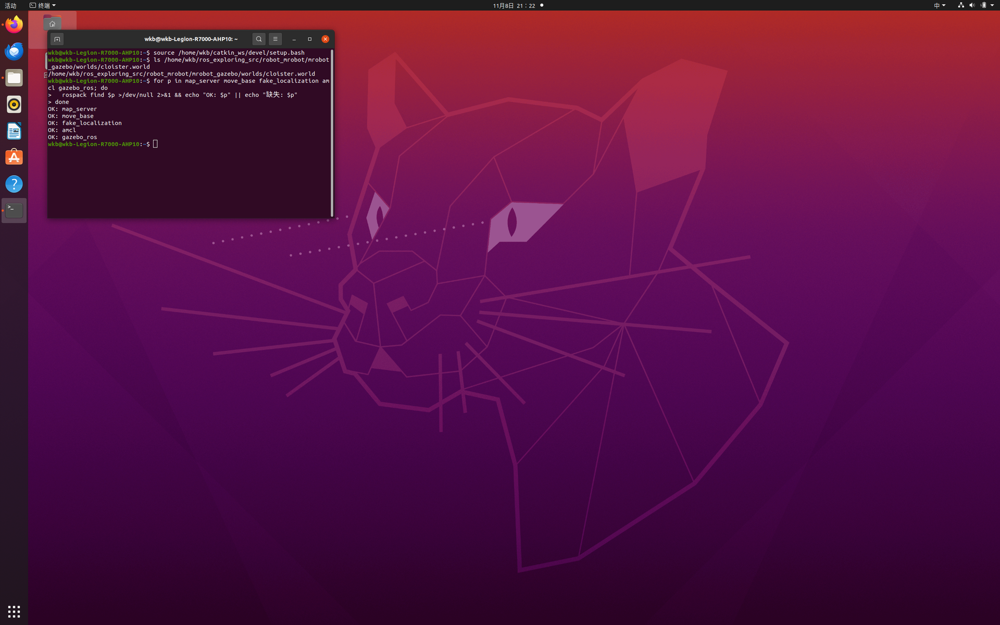
同时确认参考源码中 cloister 世界文件存在：
ls /home/wkb/ros_exploring_src/robot_mrobot/mrobot_gazebo/worlds/cloister.world
阶段 A：cloister 回廊例程
4. 准备 cloister 所需文件
4.1 复制 cloister.world
SRC=/home/wkb/ros_exploring_src/robot_mrobot
G=/home/wkb/catkin_ws/src/mrobot_gazebo
cp "$SRC/mrobot_gazebo/worlds/cloister.world" "$G/worlds/"
ls -l "$G/worlds/cloister.world"
复制后 cloister.world 与原有的 my_room.world 并列存在：
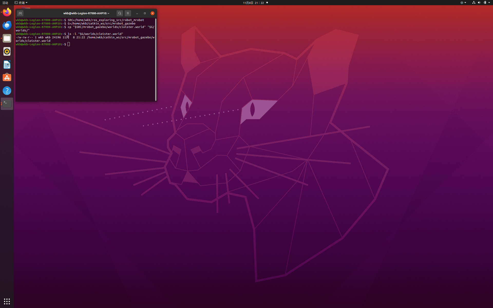
4.2 复制地图、代价地图配置与 launch
SRC=/home/wkb/ros_exploring_src/robot_mrobot
N=/home/wkb/catkin_ws/src/mrobot_navigation
# cloister 地图
cp "$SRC/mrobot_navigation/maps/cloister_gmapping.yaml" "$N/maps/"
cp "$SRC/mrobot_navigation/maps/cloister_gmapping.pgm" "$N/maps/"
# config/mrobot 代价地图配置
mkdir -p "$N/config/mrobot"
cp "$SRC/mrobot_navigation/config/mrobot/"*.yaml "$N/config/mrobot/"
# move_base 与 cloister 演示 launch
cp "$SRC/mrobot_navigation/launch/move_base.launch" "$N/launch/"
cp "$SRC/mrobot_navigation/launch/fake_nav_cloister_demo.launch" "$N/launch/"
复制完成后，maps 中出现 cloister 地图、config/mrobot 下有四个参数文件、launch 中新增
move_base.launch 与 fake_nav_cloister_demo.launch：
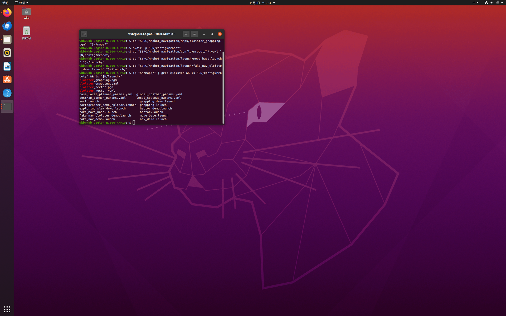
5. 编译工作空间
cd /home/wkb/catkin_ws
catkin_make
source devel/setup.bash
编译成功，末尾出现 [100%] Built target ...，无报错：
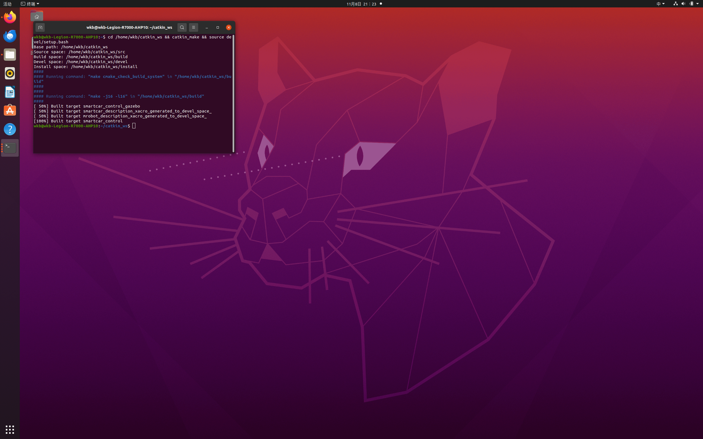
6. 修复 world_name 命令行覆盖问题
6.1 报错现象
最初尝试通过命令行把世界文件临时切换为 cloister：
G=/home/wkb/catkin_ws/src/mrobot_gazebo
roslaunch mrobot_gazebo mrobot_laser_nav_gazebo.launch world_name:=$G/worlds/cloister.world
却直接抛出异常，Gazebo 未能启动：
RLException: Invalid <arg> tag: cannot override arg 'world_name', which has already been set.
Arg xml is <arg name="world_name" value="$(find mrobot_gazebo)/worlds/my_room.world"/>
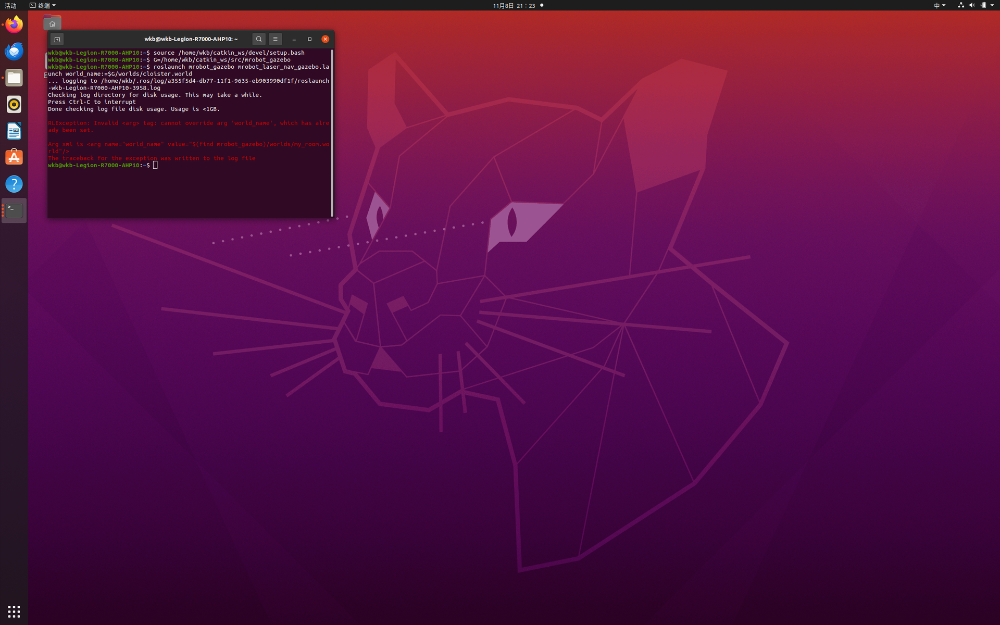
6.2 原因与修复
roslaunch 的 <arg> 有两种取值方式：
<arg name="x" value="..."/>：强制固定为该值，命令行无法覆盖；<arg name="x" default="..."/>：外部未设置时使用默认值，允许命令行覆盖。
原 launch 第 4 行使用的是 value，因此命令行传入同名参数会被拒绝。把它改为 default 即可，
my_room 仍作为默认值，不传参数时行为不变：
sed -i 's#<arg name="world_name" value=#<arg name="world_name" default=#' \
/home/wkb/catkin_ws/src/mrobot_gazebo/launch/mrobot_laser_nav_gazebo.launch
grep -n 'world_name' /home/wkb/catkin_ws/src/mrobot_gazebo/launch/mrobot_laser_nav_gazebo.launch
第 4 行变为 default，而 include 中传递参数的第 13 行保持 value="$(arg world_name)" 不变：
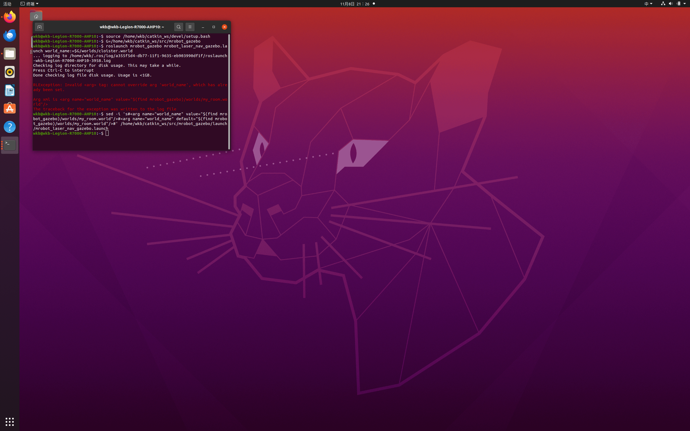
7. 启动 cloister 导航
7.1 终端 1：启动 Gazebo + cloister
source /home/wkb/catkin_ws/devel/setup.bash
G=/home/wkb/catkin_ws/src/mrobot_gazebo
roslaunch mrobot_gazebo mrobot_laser_nav_gazebo.launch world_name:=$G/worlds/cloister.world
修复后命令行覆盖生效，Gazebo 启动，差速插件加载并打印 DiffDrive 配置，urdf_spawner 成功
生成机器人模型：
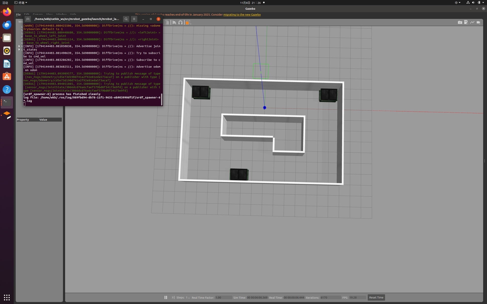
roslaunch 顶部的 SUMMARY 完整列出了参数与节点：gazebo、joint_state_publisher、
robot_state_publisher、urdf_spawner 等，/use_sim_time 为 true：
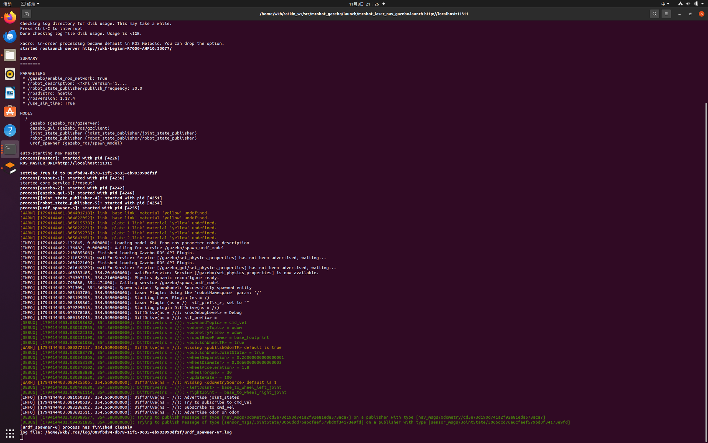
7.2 终端 2：启动导航 + rviz
source /home/wkb/catkin_ws/devel/setup.bash
roslaunch mrobot_navigation fake_nav_cloister_demo.launch
rviz 启动后加载 cloister 静态地图，机器人位置正确，左侧包含 Map、Local/Global Plan、Pose Array、LaserScan、Goal Pose、Inflated Obstacles 等显示项。Gazebo 中可清晰看到 cloister 房间与机器人：
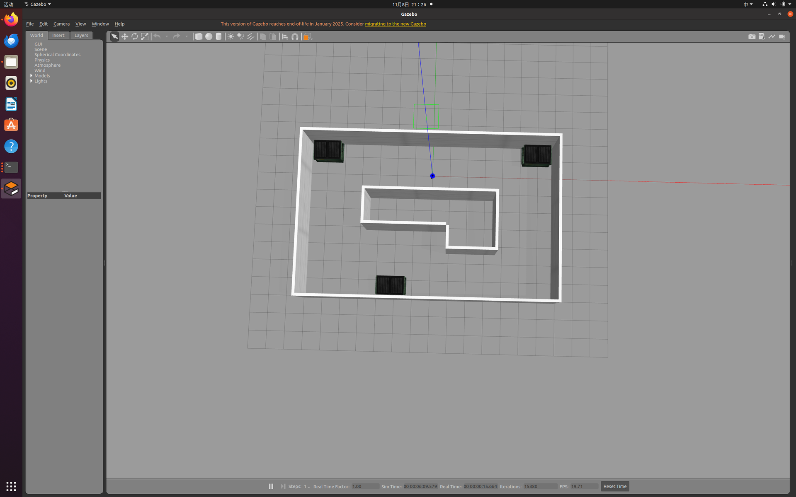
7.3 下发 2D Nav Goal
- 点击 rviz 工具栏的 2D Nav Goal；
- 在地图空旷处按下左键拖出目标方向，松开即下发目标；
- 地图上出现全局/局部规划路径，Gazebo 中的机器人真实转动、沿路径移动并实时避障，rviz 同步；
- 到达目标后终端出现
Goal reached，可多换几个目标点反复验证。
阶段 B：自建 my_room 房间导航
8. 修复 fake_nav_hourse_demo 文件缺失问题
8.1 报错现象
进入自建房间演示时，执行：
roslaunch mrobot_navigation fake_nav_hourse_demo.launch
终端报错，导航未能启动：
RLException: [fake_nav_hourse_demo.launch] is neither a launch file in package [mrobot_navigation]
nor is [mrobot_navigation] a launch file name
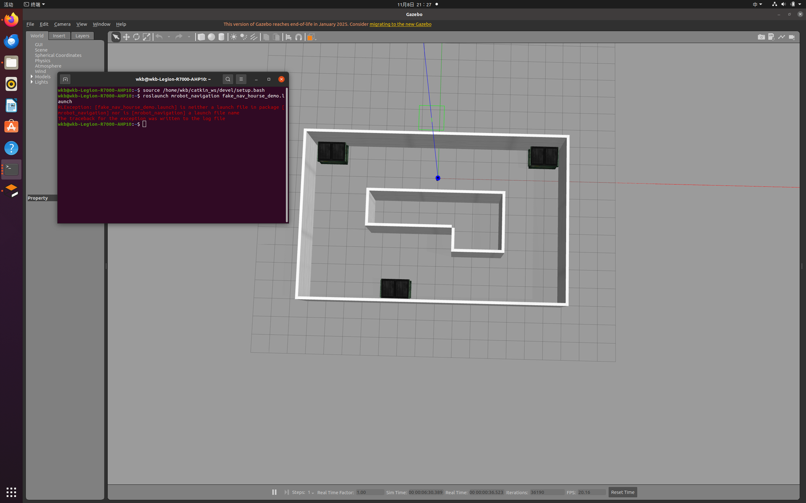
8.2 诊断
先列出各目录，确认到底哪些文件就位：
G=/home/wkb/catkin_ws/src/mrobot_gazebo
N=/home/wkb/catkin_ws/src/mrobot_navigation
ls "$G/worlds/"
ls "$N/launch/"
ls "$N/maps/"
ls -R "$N/config/"
诊断结果显示 cloister 相关文件都已就位，但 launch 中确实没有 fake_nav_hourse_demo.launch，
maps 中也没有 hourse 地图：
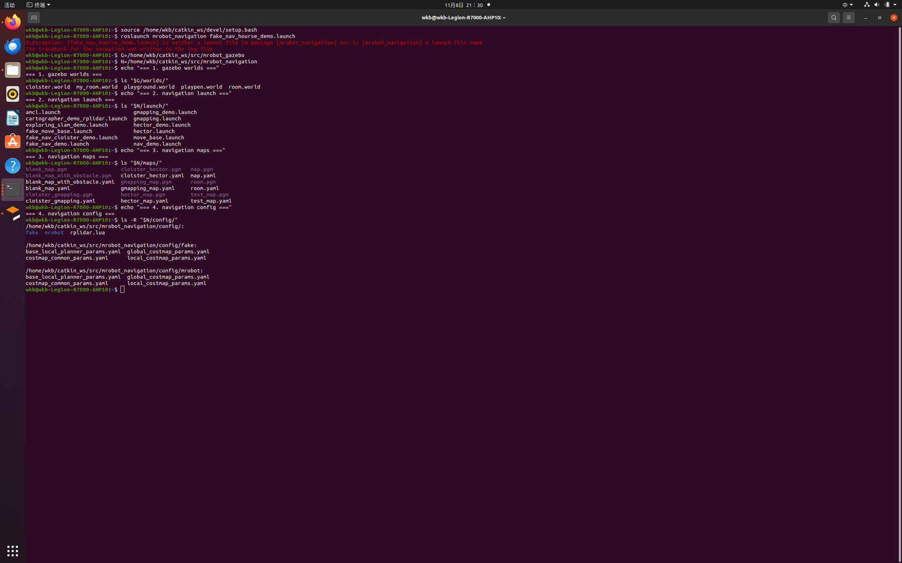
8.3 准备 hourse_gmapping 地图
教程明确：map.pgm、map.yaml、hourse_gmapping.pgm、hourse_gmapping.yaml 都要有，对应后缀的文件
内容相同。把自建房间地图复制为 hourse_gmapping，并修改 yaml 中的图片名：
N=/home/wkb/catkin_ws/src/mrobot_navigation
cp "$N/maps/map.pgm" "$N/maps/hourse_gmapping.pgm"
cp "$N/maps/map.yaml" "$N/maps/hourse_gmapping.yaml"
sed -i 's/^image: map.pgm/image: hourse_gmapping.pgm/' "$N/maps/hourse_gmapping.yaml"
8.4 创建 fake_nav_hourse_demo.launch
它与 cloister 版结构完全一致，唯一区别是地图默认值。复制 cloister 版并把地图名整体替换：
N=/home/wkb/catkin_ws/src/mrobot_navigation
cp "$N/launch/fake_nav_cloister_demo.launch" "$N/launch/fake_nav_hourse_demo.launch"
sed -i 's/cloister_gmapping/hourse_gmapping/g' "$N/launch/fake_nav_hourse_demo.launch"
验证 hourse 地图 yaml 与 launch 地图参数：
cat "$N/maps/hourse_gmapping.yaml"
grep 'arg name="map"' "$N/launch/fake_nav_hourse_demo.launch"
yaml 中 image: hourse_gmapping.pgm、origin: [-13.8, -13.8, 0]，launch 中地图默认值为
hourse_gmapping.yaml：
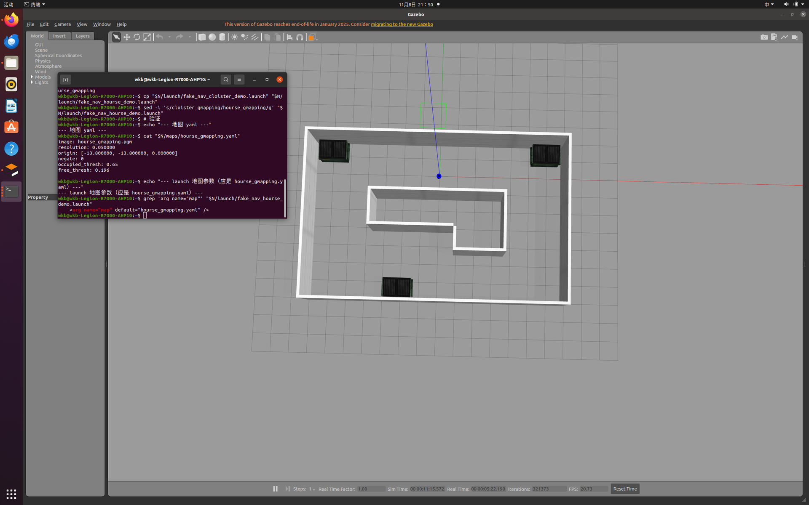
9. 编译并启动 my_room 导航
9.1 重新编译
cd /home/wkb/catkin_ws
catkin_make
source devel/setup.bash
编译成功，新增的 hourse launch 与地图被正确识别：
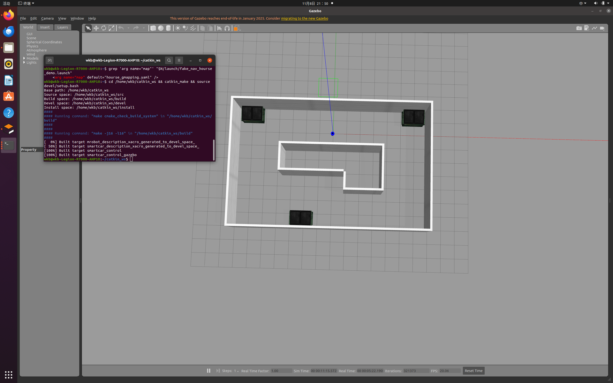
9.2 终端 1：启动 Gazebo（默认 my_room）
source /home/wkb/catkin_ws/devel/setup.bash
roslaunch mrobot_gazebo mrobot_laser_nav_gazebo.launch
不传 world_name 时默认加载自建的 my_room 世界。
9.3 终端 2：启动自建房间导航
source /home/wkb/catkin_ws/devel/setup.bash
roslaunch mrobot_navigation fake_nav_hourse_demo.launch
rviz 与 Gazebo 同时运行，rviz 中加载自建房间地图，Gazebo 中为对应的 my_room 房间：
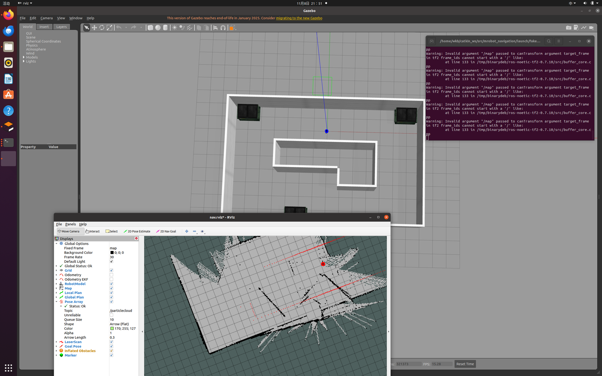
9.4 在自己的地图中导航
点击 2D Nav Goal 在房间内设置目标点，机器人沿规划路径移动、避障，rviz 中可同时看到静态地图、
实时激光点、全局/局部路径与膨胀障碍，到达后终端出现 Goal reached。这对应教程"机器人在自己建立的
地图中正常运行"的结论：
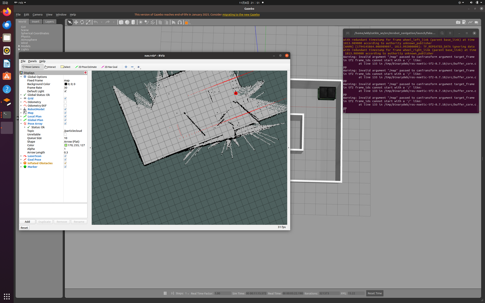
10. 保留的警告与后续优化
当前导航流程已经跑通，终端中仍存在两类警告，按计划保留到后续修改，不影响本节主体功能。
10.1 frame_id 以斜杠开头
Warning: Invalid argument "/map" passed to canTransform argument target_frame
- frame tf2 frame_ids cannot start with a '/'
config/mrobot 的代价地图参数沿用了旧式坐标系名 /map、/odom、/base_footprint，而 tf2 规定
frame_id 不能以 / 开头。后续优化时把这些 frame 名的前导斜杠去掉（话题名 /scan 是 ROS 话题、
不是 frame，保持不变）。
10.2 TF_REPEATED_DATA 冗余时间戳
TF_REPEATED_DATA ignoring data with redundant timestamp for frame wheel_left_link
(wheel_right_link) ...
Gazebo 差速插件与 launch 中的 joint_state_publisher 都在发布关节状态，相同时间戳的数据被 tf2 丢弃。
后续可把 launch 里的 joint_state_publisher 节点注释掉，只让差速插件负责关节状态（launch 注释中已
预留该说明）。
11. 关键参数解读
11.1 代价地图共用参数（costmap_common_params.yaml）
| 参数 | 取值 | 含义 |
|---|---|---|
obstacle_range |
2.5 |
2.5 m 内的障碍才被标记 |
raytrace_range |
3.0 |
3 m 内空闲区域被光线追踪清除 |
robot_radius |
0.165 |
机器人半径，用于膨胀 |
inflation_radius |
0.1 |
障碍膨胀半径 |
observation_sources |
scan |
障碍观测来源，真实激光 /scan |
11.2 全局/局部代价地图
| 参数 | 全局代价地图 | 局部代价地图 |
|---|---|---|
global_frame |
/map |
/odom |
robot_base_frame |
/base_footprint |
/base_footprint |
static_map |
true |
false |
rolling_window |
false |
true（6 m × 6 m 滚动窗口） |
resolution |
0.01 |
0.01 |
11.3 局部规划器（base_local_planner_params.yaml）
| 参数 | 取值 | 含义 |
|---|---|---|
controller_frequency |
3.0 |
速度下发频率 3 Hz |
max_vel_x / min_vel_x |
0.3 / 0.05 |
前向线速度上下限 |
min_in_place_vel_theta |
0.5 |
原地旋转最小角速度 |
xy_goal_tolerance |
0.1 |
位置容差 10 cm |
yaw_goal_tolerance |
0.1 |
角度容差 0.1 rad |
sim_time |
1.0 |
候选轨迹仿真时长 1 s |
dwa |
true |
采用 DWA 采样 |
recovery_behavior_enabled |
false |
关闭恢复行为 |
12. 常见问题
| 现象 | 原因 | 解决 |
|---|---|---|
cannot override arg 'world_name' |
launch 用 value 固定了参数 |
改为 default，即可命令行覆盖 |
fake_nav_hourse_demo.launch is neither a launch file |
自建 launch 未创建 | 复制 cloister 版并替换地图名 |
frame_ids cannot start with a '/' |
旧式 frame 名带斜杠 | 后续去掉 frame 前导斜杠（本节保留） |
TF_REPEATED_DATA ... wheel_link |
两个关节状态发布者 | 后续注释 joint_state_publisher（本节保留） |
| rviz 中机器人位置与地图有偏差 | 地图 origin 与世界对齐问题 | 不影响导航流程，后续结合建图校准 |
| 机器人完全不动 | Gazebo 处于暂停或未 source | 确认 Gazebo 播放状态并 source devel/setup.bash |
13. 小结
本节在真实 Gazebo 物理世界中完成了自主导航：环境检查 → 准备 cloister 世界、地图、config/mrobot
与 launch → 编译 → 修复 world_name 命令行覆盖问题 → 启动 cloister 导航并用 2D Nav Goal 实时避障 →
修复 fake_nav_hourse_demo 缺失问题 → 在自建 my_room 房间、用自己 gmapping 建的地图完成导航。
与 6.3 相比，本节的里程计、激光与避障都是真实物理仿真，但定位仍采用 fake_localization 完美定位。
frame 斜杠与 TF 冗余两类警告已记录，留待后续优化。
参考资料
- ROS Wiki：move_base 官方文档，http://wiki.ros.org/move_base
- ROS Wiki：fake_localization 官方文档，http://wiki.ros.org/fake_localization
- ROS Wiki：amcl 自适应蒙特卡洛定位，http://wiki.ros.org/amcl
- ROS Wiki：gazebo_ros 差速插件，http://wiki.ros.org/gazebo_ros_pkgs
- ROS Wiki：costmap_2d 代价地图，http://wiki.ros.org/costmap_2d
- 《ROS 机器人开发实践》，配套源码
ros_exploring（作者 胡春旭） - CSDN 教程：《机器人 SLAM 与自主导航（四）Gazebo 仿真机器人导航》